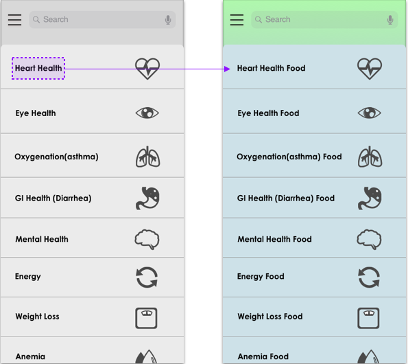

OVERVIEW
Backfarm is a product comprised of an interactive plant growing set and an app designed, specifically for people who want to produce as much of their own food as possible on their own land, and escape the urban life into a rural setting.
BACKGROUND
This project is geared around defining one particular need of a specific subculture and creating a system to fulfill it. I selected a subculture in a city which is urban homesteading. I also created the brand based on research into extant, real-world services.
WHAT IS URBAN HOMESTEADING?
Homesteading culture is really a resurgence or new version of the “back to the land” movements, which pop up every few decades or so. It’s people who want to produce as much of their own food as possible on their own land, and escape the urban life into a rural setting. These aren’t full factory farms, but homesteads, usually under 10 acres but some as small as 1/4 acre and in suburbia, and there’s even urban homesteading and gardening. The main focus is producing your own food and being connected to the process of where our food comes from.
DETAILED RESEARCH
Indoor vegetable gardens are great for a variety of reasons. They’re perfect for nature lovers who have little yard space for an outdoor garden or for those looking to keep their gardening habit going during the winter months.
“Miniature, midget, and dwarf vegetables are good selections for container growing. True dwarf varieties at full maturity have edible parts that are smaller in size than ordinary vegetable varieties and cultivars. Miniatures, midgets, and dwarfs differ from vegetables that are sold as “baby” vegetables–those are generally full-sized cultivars picked before maturity. Baby corn, for example, is most often ordinary corn harvested early just as the silk emerges from the husks.”
-Steve Albert “DWARF AND MINIATURE VEGETABLES FOR CONTAINERS” 2019.
PROBLEMS
• Time:
This can be frustrating—especially if you’re a homesteader who works another job off the homestead.
• Skills:
Farming is actually quite difficult and requires knowledge/skill in agriculture that are difficult and time-consuming to learn.
• Seeds choose:
It is difficult for a homesteader to choose the best indoor fruit/vegetable seeds from the wide array of options.
SOLUTIONS
• A website to educate people how to farm.
• A reminder app to organize the plant’s maintenance schedule.
• An online shop that curates the best indoor fruit/vegetable seeds.
COMPETITIVE ANALYSIS
- From Seed to Spoon
- SmartSteader
- Right Plants
TARGET AUDIENCE
The target audience will be millennials (Born 1981-1996 around 22-37 years old) who have moved to the city, to whom the sustainable DIY movement resonates.
PERSONAS
These are the three main personas for the Backfarm App.
1. The student who lives in the city.
2. The women who wants organic food.
3. The man wants to buy some miniature plant seeds.
- Primary
- Secondary
- Tertiary
-
"Simple Living in the modern world, producing my own food is a simplistic lifestyle."
STORY:
She is a student who is living in San Francisco. One day she found some wildness space in her backyard, she wants to grow some plants by own to make the yard pretty. She starts grow a small urban farm in the city.
PAIN POINTS:
1. Restaurants and markets cost more price for organic food.
2. Sometimes, she’s too busy to consume food at the right time.
NEEDS:
1. Having own mini urban farm.
2. Growing multiple plants at the same time.
-
"Living a healthy and organized life is what I value the most."
STORY:
As a mom, she likes to buy organic food from supermarket and cook everyday because she thought that is more healthy for her kid.
PAIN POINTS:
1. She has to take care of her kids all the time, cannot remember everything.
2. she always consider where is the food coming from.
3. She consides a lot about the price of the healthy food.
NEEDS:
1. A reminder set by herself.
2. Knowing the different types of plants about their benefit.
-
"Miniature insulated greenhouse that allows people to grow vegetables during off-growing season."
STORY:
He has a small greenhouse with multiple plants, he wants to produce as much of his own food as possible in his own yard.
PAIN POINTS:
1. Not easy to find miniature seeds in the store.
NEEDS:
1. Have a miniature insulated greenhouse.
2. Growing midget vegetables at home.
INFORMATION ARCHITECTURE
WIREFRAMES
I then developed low-fidelity wireframes to visualize my main three task flows:
1. Research & add plants to user list 2. Set reminder schedule 3. Buy plant seeds
- Task 1
- Task 2
- Task 3
USER TESTING
I conducted two rounds of user testing. I was focusing on feasibility of the solution and usability of the mid-fidelity prototypes. I tested it out with three potential users in this phase and got challenged on the solution and design of the prototype. Based on the feedback I got from the testers, I made adjustments on the content, layout and hierachy of information.
WHAT IS CHANGED?
1.1
Merge function
Merge "add to your plant list" and reminder，remove the “+” icon from home page.
1.2
Research With Health Benefits Title
Having detail health benefits title of the research, people would search plants by their functition.
1.3
Consistency Name
Having same detail health benefits title in plant list page.
2.1

Less is More
Remove "My plant list" from user profile page keeping it simple.
2.2
Less Steps
Remove “User Plant List” completely, go to plant schedules directly. From the schedule page add one more function which is “add more schedule”.
2.3
Reminder Function
Having a clock icon to set a reminder to maintain the plants, users can check them anytime and add a new plant schedule.
3.1
Simplify Steps
Remove the arrow icons from home page. Open the details page by clicking on the vegetable instead.
3.2
Separate Plant Detail Page and Buying Seeds Section
The plant detail page separated by two sections, which are plant information part with “add to your plant list” button and seed information part with “add to your cart” button.
PROTOTYPE

Home page Filter
Research plants by their health benefits. Each type of the health benefits catalog has a list of the food that provide to people to choose.
Reminder Clock
Clock icon shows reminder function that provide to people to set their plant growing schedules. User can check anytime and also the notification will show in the lock screen.


Seeds online shopping
Buying special miniature seeds from app, during the detail information page. User are able to check their shopping cart anytime from cart icon.
BRANDING & UI DESIGN
WEBSITE PROTOTYPE

CONCLUSION
This project taught me how to do DIY farming. Through the research process, I realized there is so many knowledge about farming which is not easy to grow by none-experienced people.
Let's connect